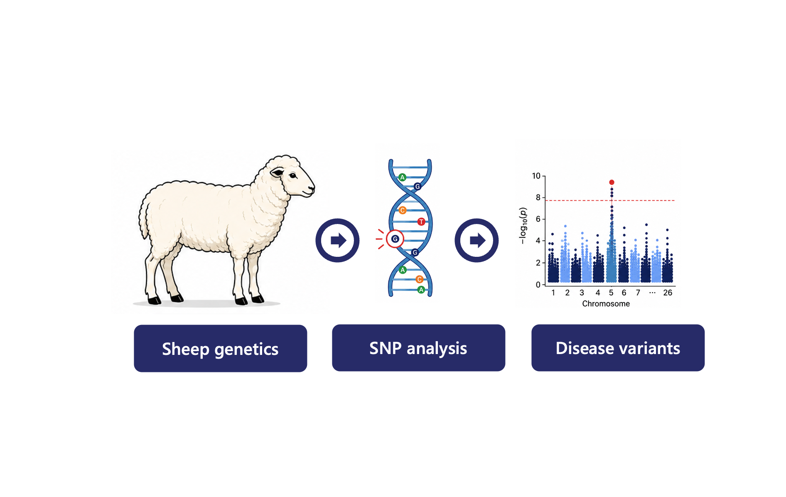
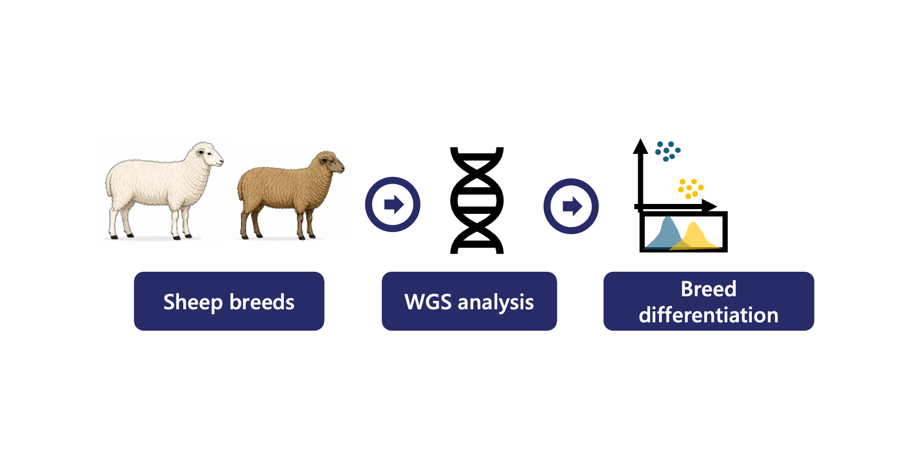

Early Lactose Exposure and Calf Development
Longitudinal investigation of early-life lactose supplementation, calf growth, health, and microbiome development.

Rumen Metatranscriptomics in Dairy Cows
Functional profiling of rumen microbial ecosystems using large-scale metatranscriptomic sequencing and pathway analysis.

Genetic Association Analysis in Ovine Johne's Disease
Genome-wide association analysis to identify genetic variants associated with Johne's disease susceptibility in sheep.

Sheep Breed Differentiation Using Whole-Genome Sequencing
Whole-genome sequencing analysis of genetic variation, population structure, and breed differentiation in sheep.